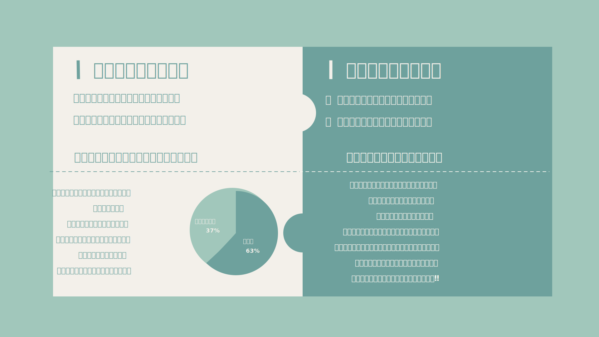
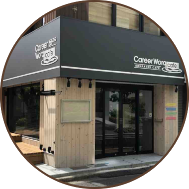
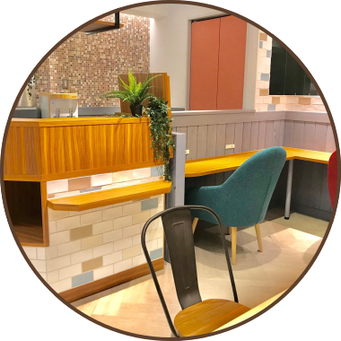
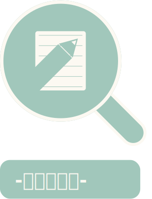

「就職活動って何から始めればいいかわからない」
そんな時は、就活をパズルに例えて考えてみましょう。
就活には様々なピースがあります。
自己分析、企業研究、面接、ES、ビジネスマナー、etc..
それらのピースを１つ１つ着実に作り、集めていくことが、
就活を効率よく進めていくための近道です。
パズルを完成させ、理想の内定をGETしましょう‼︎




志望企業への内定や就活の成功など、
目標を達成するためには
「モチベーションの維持」が大事になってきます。
明確な目標を設定し、
達成する事でモチベーションの維持をする事ができます。
イベントやセミナーに参加し、
実際に働いている人達の働き方や考え方を知ることで、
働くことの楽しさややりがいを見つけることができます。
また、自分の理想の将来像に近づくために、
どのような選択をしていけばいいのかが明確になります。
インターンに参加し、企業の仕事体験などを通して、
成功経験や失敗経験を得ることできます。
これらの経験を積むことで自分の強みや弱みを把握し、
自己分析や、業界・企業・職種理解にも活かすことができます。

自己分析や企業分析、習慣化する事以外にも
必要なピースはたくさんあります。
全てのピースを１人で作るのはなかなか難しい..
そんな時は、Career Worq Cafeで
就活プロと一緒にあなたのパズルを完成させましょう‼︎




仕事はお金を稼ぐ為だけの手段ではありません、
自己実現の手段であると私たちは考えます。
キャリアワークカフェでは業界分析や
なりたい自分に近づいていく為の経験が積める場所であり、
自分の強みと弱みを深堀する自己分析やインターンを行い、
企業と学生が繋がるリアルプラットフォームを提供しております。


自分がどんな時に喜びを感じ、
何にやりがいを感じているかを調べ、
やりたいことや、なりたい自分を明らかにします。
なぜ働くのかという軸を持つことができます。
独自の適正検査で、能力、興味、価値観から
成長可能性やストレス耐性まで測ることができ、
色々な角度から自分を知ることができる。
就活のプロがあなたの強み弱みを見つけだし、
あなた自身が知らない一面を知ることができます。
ESやエントリーシートも良い悪いを判断するのは他者です。
自分を客観的に見ることで、内定にグッと近づきます。
キャリアコンサルタントが業界、職種についての解説や、
企業の見分け方を伝授！
仕事内容、キャリア形成、将来性、勤務条件、
社風様々な要素を見極め、
あなたに合った企業を一緒に見つけましょう！
独自の適正検査で、能力、興味、価値観から
成長可能性やストレス耐性まで測ることができ、
色々な角度から自分を知ることができる。


就活を成功させるために、
どのような意識で行動していばいいのか、
目的、目標をどう定めるべきかをお伝えします！
私達が就活のスタートダッシュをサポートします！
３種類の業界、会社を知ることができ、
日にちによって様々なインターンをご用意しています！
カフェ空間での開放的な説明会や
実際に働いているオフィス見学、
IT関係ならプログラミング体験もできてしまう
インターンとなっております。もちろん無料です。